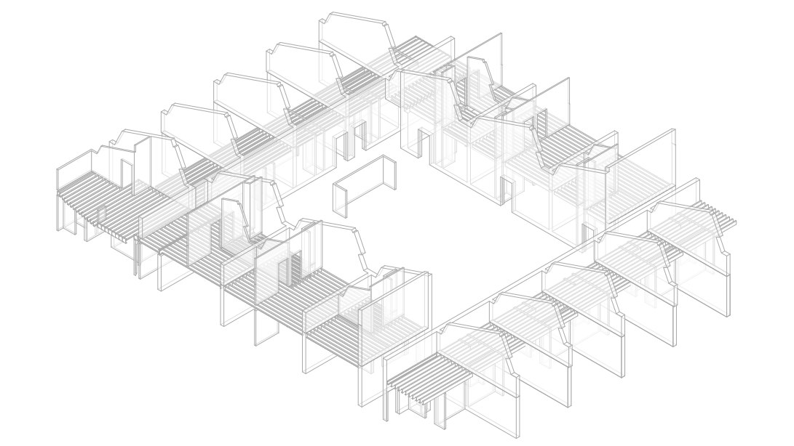
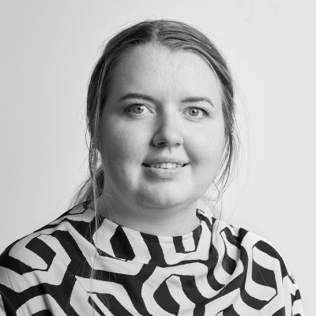
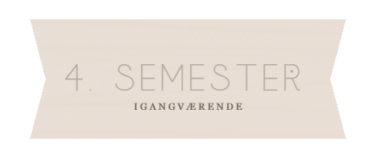
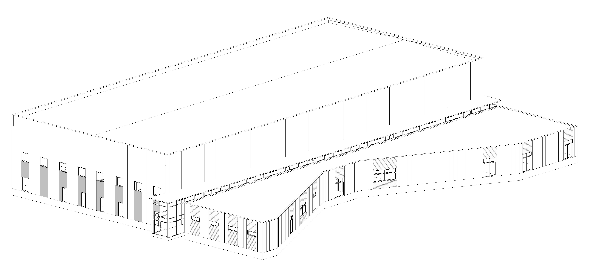
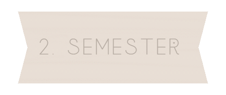
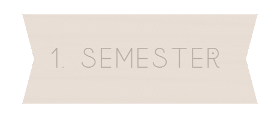

Renovering
Projekt med fokus på renovering, projektering og samspillet mellem eksisterende byggeri og nye løsninger.
Jeg er bygningskonstruktørstuderende med interesse for projektering, byggeteknik og digitale arbejdsgange i byggeriet.
Her viser jeg udvalgte projekter, faglige interesser og mit arbejde med både projektering, struktur og udvikling i den digitale del af byggeriet.


Jeg er bygningskonstruktørstuderende med interesse for projektering, byggeteknik og den digitale del af byggeriet. Jeg kan godt lide at arbejde i feltet mellem det tekniske, det visuelle og det praktiske.
Jeg interesserer mig især for, hvordan modeller, tegninger og digitale værktøjer kan skabe bedre sammenhæng i projekteringen. Samtidig motiveres jeg af at finde løsninger, der er enkle, brugbare og giver mening i praksis.
Jeg har særligt fokus på Revit, BIM og struktur i digitale arbejdsgange, men jeg ser det som en del af en større faglighed omkring projektering og kvalitet i byggeriet.
Udvalgte semesterprojekter med fokus på projektering, byggeteknik, detaljering og digitale værktøjer.
Projekt med fokus på renovering, projektering og samspillet mellem eksisterende byggeri og nye løsninger.

Tværfagligt projekt med fokus på boligbyggeri, opbygning, sammenhæng og projektdetaljering.

Projekt med fokus på industribyggeri, byggeteknik, præfabrikation og teknisk forståelse.

Projekt med fokus på planlægning, samarbejde, procesforståelse og projektets opbygning.

Grundlæggende projekt med fokus på konstruktion, materialer, formidling og forståelse for byggeri.

Her kan jeg senere tilføje flere projekter, når portfolioen udvides med nye arbejder og erfaringer.
Faglige områder jeg fordyber mig i, særligt inden for digital projektering, struktur, automatisering og udvikling af arbejdsgange.

Arbejde med automatisering i Revit med fokus på at forenkle gentagne opgaver og skabe bedre arbejdsgange.

Fordybelse i hvordan struktur, parametre og ensartede principper kan styrke kvaliteten i projekteringen.

Refleksioner over hvordan digitale værktøjer og klare strukturer kan gøre projekteringen mere robust og overskuelig.

Interesse for værktøjer, der kan understøtte mere stabile, effektive og gennemarbejdede processer.

Interesse for tydelig dokumentation, struktur og kvalitet i det materiale, der ligger til grund for projekteringen.

Her kan jeg senere tilføje flere emner, undersøgelser, arbejdsmetoder eller faglige eksperimenter.
Et kort overblik over min profil, erfaring og faglige fokus.
VIA University College
Interesse for projektering, byggeteknik og digitale arbejdsgange i byggeriet.
Erfaring med Revit, modeller, tegningsmateriale og projektering i praksis.
Struktur, kvalitet og brugbare digitale arbejdsgange.